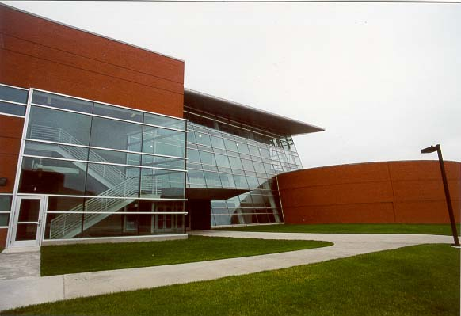

A second view. This building was the location for a display of the first digital computer recently reconstructed by ISU staff.
Section Index | Main Menu | Homepage
Fair use of these photos for educational purposes is permitted.
© Richard Carlson
A second view. This building was the location for a display of the first digital computer recently reconstructed by ISU staff. | |
|  | |
Section Index | Main Menu | Homepage Fair use of these photos for educational purposes is permitted. | |
|---|---|